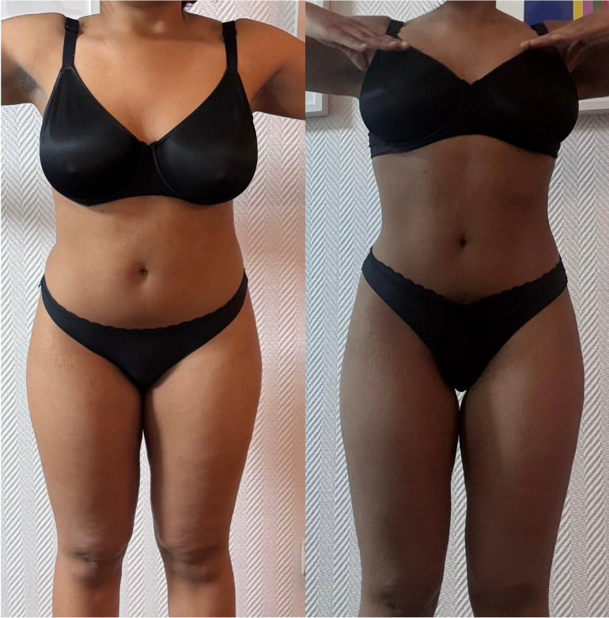
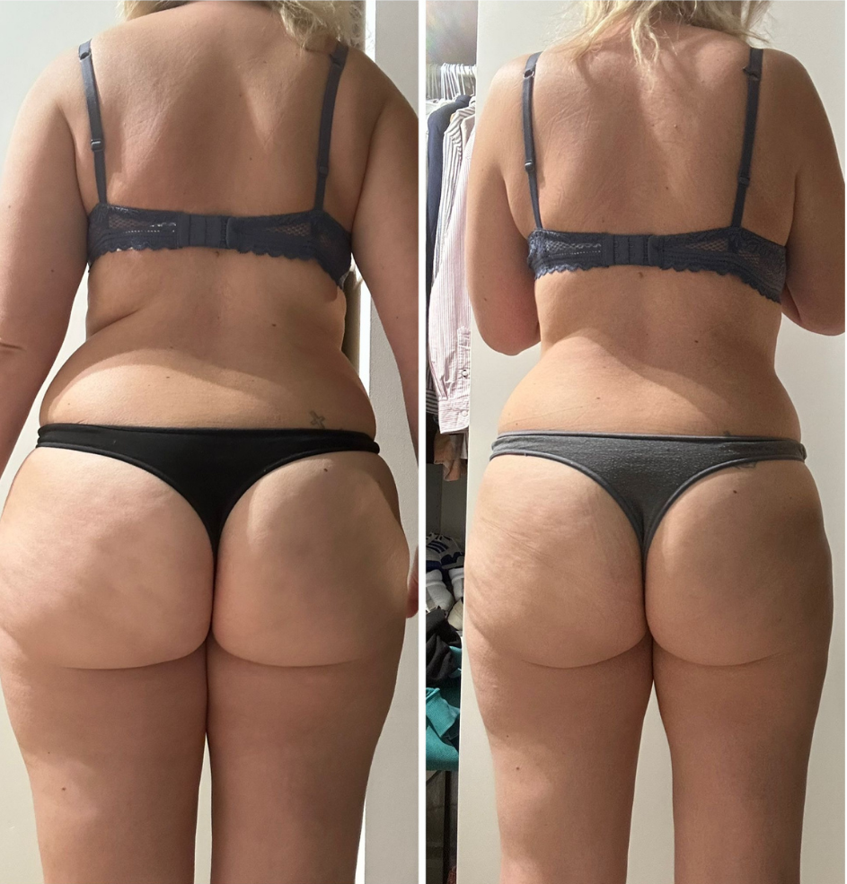
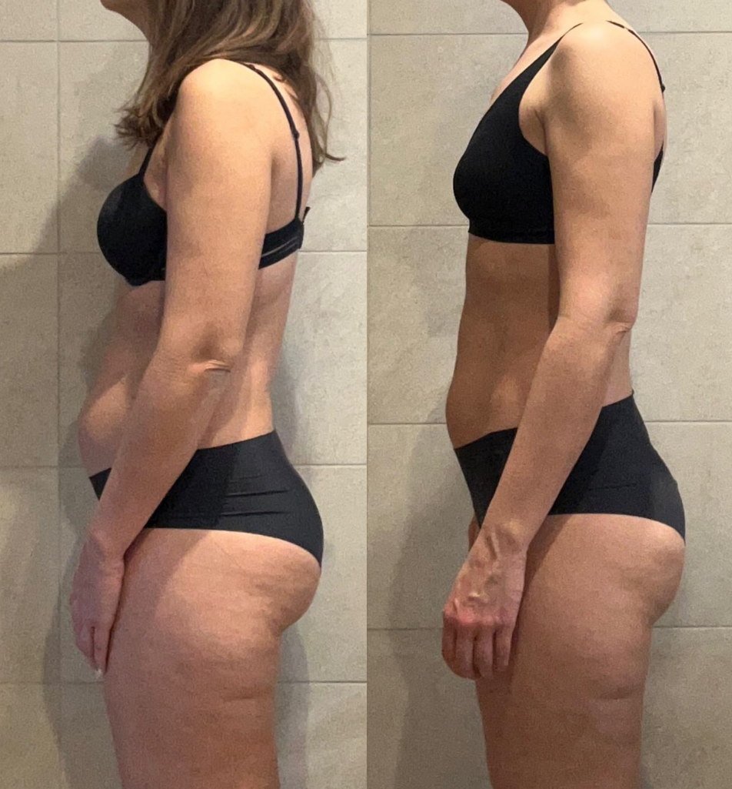
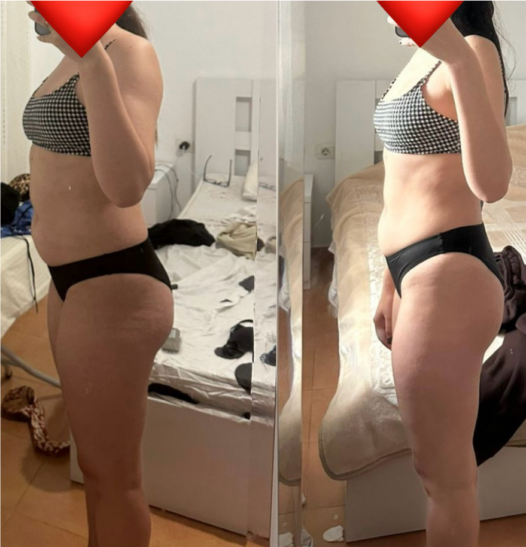
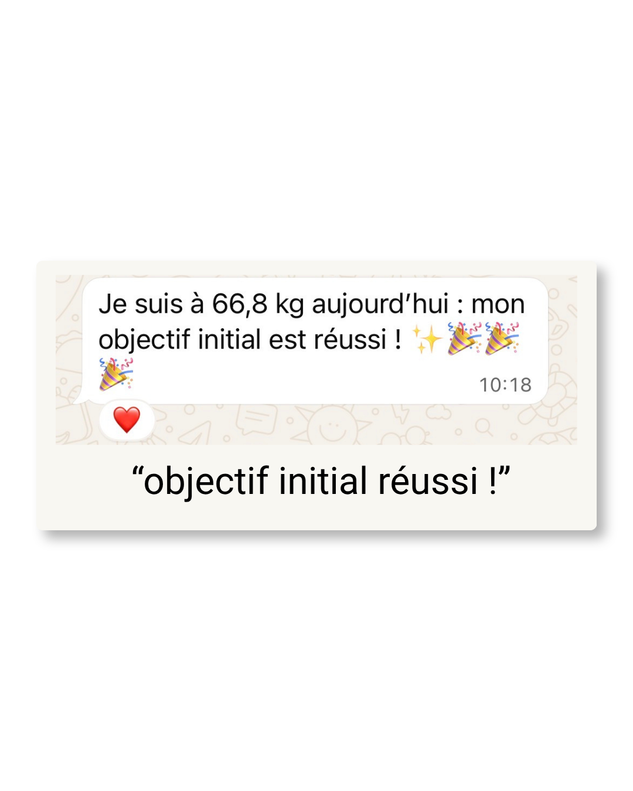
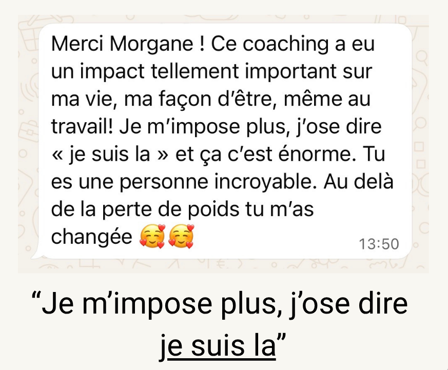
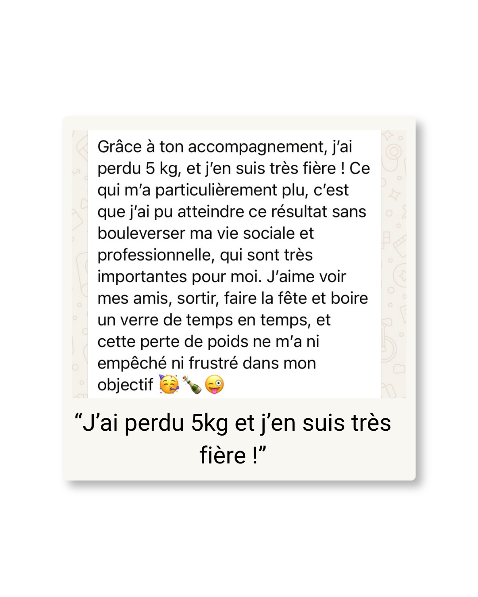
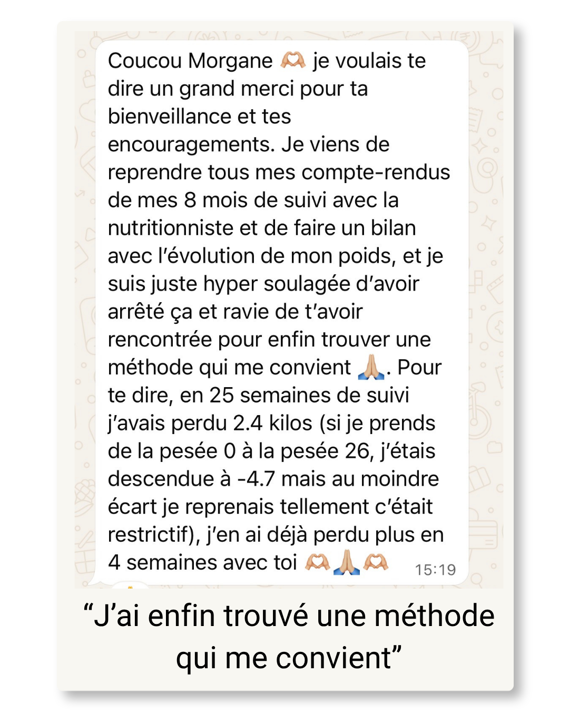
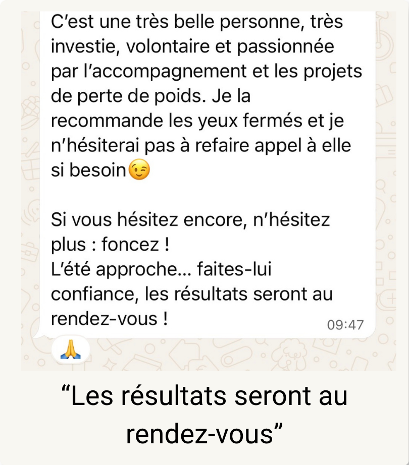
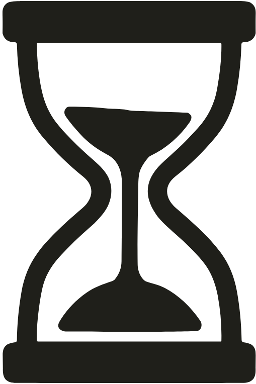

Charlotte a réservé une un appel
il y a 10 minutes
Reset est un accompagnement de 3 mois pour les femmes entre 25 et 40 ans qui veulent perdre 5 à 10 kg et devenir autonomes dans leur perte de poids en optimisant leur santé.
Charlotte a réservé une un appel
il y a 10 minutes
Tu as déjà tout essayé : supprimer les glucides, jeûne intermittent, régime (Weight Watchers, Naturhouse, Herbalife, SoShape...), compléments alimentaires, programmes pdf en ligne, cardio à jeun… et pourtant, le gras est toujours là... Tu te sens fatiguée, frustrée et découragée. Tu t’es peut-être déjà même senti nulle et incapable de réussir par toi même.
Tu te demandes pourquoi tu n’y arrives pas ?
Parce que la perte de poids ne dépend jamais d’un seul facteur. Ce n’est pas seulement ce que tu manges. Ce n’est pas seulement le sport. Et ce n’est certainement pas une question de volonté. Le vrai problème, c’est l’écosystème dans lequel tu évolues.
Ton environnement social, ton niveau de stress, ton sommeil, ton alimentation, ton activité physique, ton organisation… tout ça influence directement ta capacité à perdre du poids, mais surtout à le maintenir dans le temps.
Ce dont tu as vraiment besoin, ce n’est pas d’une méthode complexe, restrictive ou d’une énième solution miracle mais d’un accompagnement qui s’adapte à ta vraie vie : celle d’une maman, d’une entrepreneuse, de femme avec un travail prenant ou des horaires décalés…
Tu as besoin d’une personne qui comprend ton quotidien au lieu d’essayer de le changer pour que la perte de poids devienne naturelle, durable et enfin compatible avec ta vraie vie.
Ici, c’est l’accompagnement qui s’adapte à toi et pas l’inverse : 0 charge mentale, 0 pression, juste du passage à l’action.
La perte de poids est la conséquence d'un écosystème optimisé. Il repose sur 8 piliers que nous viendrons travailler et optimiser tout au long de l’accompagnement :
Nutrition
Marche à pied
Sommeil
Habitudes durables
Stratégies alimentaires
Gestion des émotions
Santé digestive
Confiance en soi
RESET n’est pas un programme que tu télécharges et que tu abandonnes au bout de deux semaines parce qu’il ne colle pas à ta vraie vie.
C’est un accompagnement sur mesure pensé pour toi et avec toi pour s’adapter à ton quotidien, tes contraintes, tes goûts, ton rythme et ton objectif.
Tu ne seras plus jamais seule face à tes doutes en te demandant quoi manger, comment gérer un restaurant, un week-end entre amis, une sortie, un apéro ou une période de stress.
L'idée, c'est de perdre du poids petit à petit, de progresser chaque semaine, et de construire progressivement ton écosystème pour que tu tiennes enfin tes objectifs sur le long terme. Pas de recette magique mais une méthode solide et scientifique, appliquée semaine après semaine.
Tu ne seras plus jamais seule.
Je me rends disponible tous les jours pour que tu puisses me poser tes questions dès que tu en ressens le besoin, me partager tes doutes, tes difficultés mais surtout tes victoires.
L’objectif, c’est que tu ne restes plus bloquée face à un imprévu (ex: un repas à l’extérieur, une baisse de motivation etc) ou une situation que tu ne sais pas gérer.
Nos échanges réguliers me permettent de vraiment comprendre ton quotidien et d’ajuster le plan d'action semaine après semaine, pour qu’il reste réellement adapté à ton objectif. Et il te permet surtout de ne plus répéter les mêmes erreurs en boucle.
Tu recevras tous les mois 28 idées de recettes 100% personnalisées selon tes goûts, ton objectif calorique et ton quotidien.
Des recettes gourmandes, simples, équilibrés et pensés pour toute la famille parce qu’il est hors de question que tu doives cuisiner un plat à part pour perdre du poids.
Ces recettes sont là pour t’aider à te faire plaisir, à avancer vers ton objectif et à partager les mêmes repas que les personnes avec qui tu vis, sans frustration ni charge mentale supplémentaire.
Avec moi, tu ne recevras jamais un simple PDF qui te dit quoi manger. Et tu sais pourquoi ? Parce que mon objectif, c’est que tu développes ton autonomie alimentaire : comprendre comment composer tes repas, savoir les adapter à ton quotidien, à tes envies et surtout aux imprévus.
Tous les 15 jours, nous faisons un bilan en visio de 30 minutes toutes les deux.
L’objectif est de faire le point sur tes avancées, les actions que tu as mises en place mais aussi les difficultés que tu as pu rencontrer.
Ces bilans sont des moments essentiels dans l’accompagnement : ils te permettent d’obtenir rapidement des réponses à tes questions, des solutions concrètes à tes blocages et un plan d’action ajusté à ta situation.
Pour moi, il est aussi important d’entretenir un véritable échange avec toi et de prendre le temps de discuter ensemble. Être disponible par message c’est précieux mais se retrouver en visio permet d’aller plus loin, de mieux comprendre ce que tu vis, ce que tu ressens et de te sentir réellement soutenue.
Tu intègres un groupe WhatsApp privé avec mes clientes et anciennes clientes.
C’est un espace bienveillant où chacune peut partager ses victoires, ses recettes, poser ses questions et s’entraider au quotidien. Tu n’es jamais seule dans ton parcours : tu avances entourée de femmes qui vivent les mêmes étapes que toi.
J’y partage aussi des recettes protéinées, des fiches pédagogiques, des conseils/astuces pratiques et des résumés simples d'articles scientifiques pour t’aider à mieux comprendre ce que tu fais.
L’objectif est simple : te transmettre la bonne information pour t’aider à devenir autonome dans ta perte de poids.
Mes clientes bénéficient d’un accès privé à une bibliothèque de ressources spécialement conçues pour les accompagner au quotidien.
Elles y retrouvent des guides complets, concrets et faciles à appliquer sur des sujets essentiels : préparer un apéro protéiné à la maison, décrypter les étiquettes nutritionnelles, gérer les sorties au restaurant, faire les bons choix en soirée, organiser sa liste de courses etc...
Des contenus concrets et pratiques, pensés pour transformer chaque situation du quotidien en opportunité de progresser.

Camille, 26 ans
-4kg en 1 mois

Marine, 37 ans
-5kg en 3 mois

Sophie, 36 ans
-5kg en 4 mois

Dorissa, 29 ans
-7kg en 3 mois





Un système durable pour transformer l’intention en action. Voici ma stratégie :

Une perte de poids saine et durable prend du temps.
C’est pour cette raison que l’accompagnement dure 90 jours : pour te laisser le temps de comprendre ton corps, de devenir autonome et d’apprendre à ajuster ta stratégie en fonction de ton quotidien.
Le but, c’est que tu saches exactement sur quels leviers agir lorsque des imprévus s’ajoutent à ton emploi du temps. C’est ta capacité à adapter tes habitudes face à ces imprévus qui fera la différence dans l’atteinte de ton objectif.
Les écosystèmes gagnent toujours sur la motivation. Mise en place de routines, suivi hebdomadaire et boucles de feedback constantes.
L’adhérence à long terme vient du plaisir. Aimer ses assiettes, manger avec gourmandise, profiter de sa famille et de ses amis, faire un sport par plaisir et les résultats viendront naturellement.
Si tu te reconnais dans ce que tu viens de lire, que tu sens qu’il est temps de passer à l’action et de te faire accompagner pour ne plus avancer seule alors la prochaine étape est simple : remplis le questionnaire et réserve ton créneau (pour une visio avec moi) si ton profil correspond.
Moi, c’est Morgane.
Et il y a deux ans, j’ai pris une décision qui a changé ma vie : tout quitter pour aider les femmes à reprendre confiance en elles.
Sur le papier, j’avais pourtant tout pour être "heureuse" : des diplômes, un poste dans l’industrie pharmaceutique, un environnement stable. Mais au fond de moi je savais que je n’étais pas à ma place…
Depuis toujours, j’ai été attirée par le domaine de la santé. J’ai construit tout mon parcours autour de cet univers : une licence en biologie/biochimie/biotechnologie, un master en santé publique puis une spécialisation en hygiène/sécurité/environnement en école d’ingénieurs.
Mais au fil du temps, j’ai compris que ce qui me faisait réellement vibrer, ce n’était pas seulement la santé au sens large. C’était l’humain. Le lien. Le fait d’aider les autres à trouver des solutions concrètes à ce qu’elles traversent. Et plus particulièrement, accompagner les femmes dans leur transformation.
Ce choix, je ne l’ai pas fait par hasard. Moi aussi, j’ai traversé des périodes où je ne me reconnaissais plus : troubles du comportement alimentaire, gros troubles digestifs, prise de poids, perte de confiance en moi, isolement… J’ai connu ce moment où l’on ne se sent plus bien dans son corps. Où l’on doute de soi. Où l’on ne sait plus par où commencer.
Et finalement, qui peut mieux comprendre vos doutes, vos blocages et vos peurs qu’une femme qui les a traversés elle aussi ?
C’est justement parce que j’ai réussi à m’en sortir que j’ai créé ma méthode.
Aujourd’hui, j’accompagne des femmes qui ont un potentiel immense mais qui l’ont parfois oublié. Ce qui m’anime profondément, c’est de les voir reprendre vie. Changer le regard qu’elles portent sur elles-mêmes. Retrouver leur énergie, leur sourire, leur lumière.
Les voir être enfin fières d’elles.
Les voir oser reporter des vêtements qu’elles n’osaient plus mettre.
Les voir se parler avec douceur au lieu de se juger.
Les voir atteindre leurs objectifs mais surtout comprendre qu’elles sont capables de le faire. Et ça, c’est ma plus belle victoire.
Dans la plupart des cas, le problème n'est pas la perte de poids. C'est l'absence d'une méthode adaptée à ton environnement et vraiment individualisée. Beaucoup de femmes s'inspirent des régimes sur les réseaux mais ceux-ci ne correspondent pas à leur réalité. Mon accompagnement part de là où tu en es, avec un objectif clair : te faire avancer a ton rythme !
Il faut que tu sois investis tous les jours et même le week-end. Ton corps lui ne fait pas de pause.
Oui. C’est mon métier et surtout tu ne payes pas un “programme”, mais un accompagnement complet pour obtenir des résultats concrets et durables. Tu bénéficies d’un suivi personnalisé, structuré, optimisé avec un accompagnement quotidien et un cadre qui te permet d’obtenir de vrais résultats, tout est mis en place pour que tu avances sans frustration. Tu investis en toi une bonne fois pour toutes car tu seras sur quel levier jouer après l’accompagnement donc tu arrêteras de dépenser dans des programme ou produits qui ne sont pas efficaces.
Non. Ce n'est pas un simple régime ou programme à faire seule dans ton coin. Mon accompagnement se construit et est construit autour de ta vie. C’est un suivi personnalisé, individualisé et adapté à toi et ton rythme de vie.
Une transformation dépend de plusieurs facteurs : tes croyances limitantes, tes antécédents alimentaires et sportifs, tes habitudes actuelles, ton environnement social, personnel et professionnel, ta santé générale et surtout ton implication et combien de temps tu mets pour mettre en place et appliquer le plan d’action. Nous évoluons toutes différemment et l’important n’est pas la vitesse à laquelle tu progresses mais comment tu implémentes les nouvelles habitudes dans ton quotidien.
Malheureusement mon accompagnement est uniquement pour les femmes entre 25 et 40 ans.
Aucun problème. J’ai des avocates, des infirmières avec un rythme décalé, des entrepreneuses, des femmes qui ont 2 travails, des femmes qui ont 3 enfants etc... le temps n’est pas une excuse l’organisation oui et le sens des priorités.
Oui, tu peux régler ton accompagnement en 1x ou en 3x sans frais, selon ce qui est le plus confortable pour toi.
Tout commence par un appel gratuit de 45 minutes, pendant lequel on prend le temps d’analyser ta situation, de comprendre tes objectifs, tes blocages et ton mode de vie.
Si je suis en capacité de t’aider et que le feeling passe entre nous, je te proposerai alors l’accompagnement le plus adapté, et nous discuterons du tarif à ce moment-là.
Ensuite, pendant 3 mois, tu bénéficieras d’un suivi complet avec 2 bilans individuels par mois avec moi, un accès à un groupe privé de femmes, 28 idées de recettes personnalisées chaque mois, tes calories adaptées à ton objectif, ainsi qu’un accès à mon WhatsApp 7j/7 pour poser toutes tes questions.
Au contraire, c’est même important.
Je souhaite que tu continues à vivre pendant l’accompagnement : partir en vacances, partir en week-end, manger au restaurant ou avoir des imprévus fait partie de la vraie vie.
L’objectif n’est pas que tu sois dans un environnement “parfait” / "stérile" pendant 3 mois, ni que tu suives ton plan d’action à la lettre sans jamais en sortir. Le but, c’est justement que tu apprennes à gérer ces situations sans culpabilité, sans frustration et sans avoir l’impression de devoir tout recommencer à zéro.
Si pendant 90 jours tu évites toutes les sorties, les vacances ou les moments du quotidien, tu n’apprendras pas réellement à devenir autonome. C’est souvent dans ces situations que l’on apprend le plus : comment ajuster, comment faire des choix...
J’encourage donc mes clientes à sortir, à manger au restaurant et à partir en vacances parce que c’est comme ça qu’on construit un équilibre durable, adapté à la VRAIE vie.